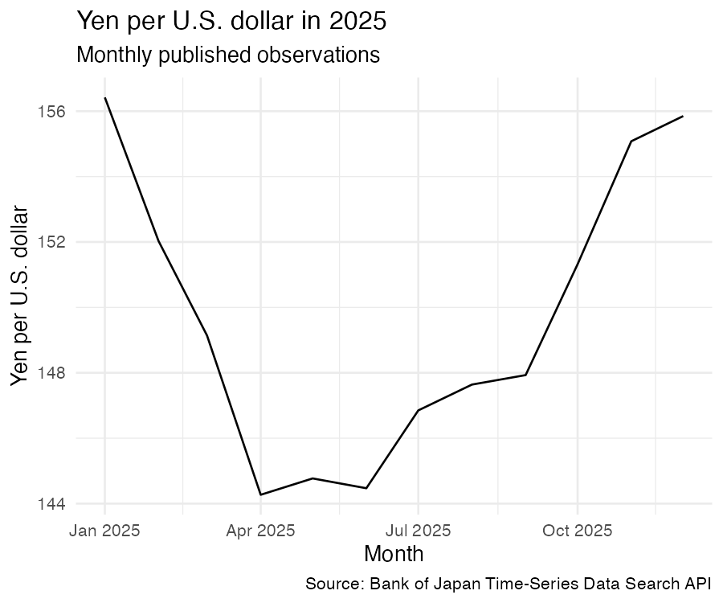

readboj is an R client for the official Bank of Japan (BoJ) Time-Series Data Search API and selected official download surfaces. It is for analysts, researchers, and reproducible data pipelines that need to discover series, read observations, retain the exact source response, and replay a result offline.
The package works directly with allow-listed official BoJ HTTPS hosts. Each successful response or file is identified by a SHA-256 hash in the returned provenance, and bounded caches support connected and offline workflows. Version 0.2.0 is distributed from the private GitHub repository.
Install
Install the current GitHub version with:
install.packages("pak")
pak::pak("chartwell-macro/readboj")Installation requires access to the GitHub repository. If the repository is private or your network restricts GitHub, configure a GitHub personal access token or another authentication method supported by pak. This is separate from the supported public BoJ routes, which do not require BoJ credentials (see Network, credentials, and cache behaviour).
CRAN installation becomes available after the package is accepted there:
install.packages("readboj")For the current development release, use the GitHub installation above.
Retrieve and chart a time series
This end-to-end workflow searches the official metadata catalogue, selects the exact monthly exchange-rate series FM08/FXERM07, retrieves its 2025 observations, keeps valid date/value rows, and draws a line chart. Set READBOJ_LIVE_EXAMPLES=true to run the bounded official API calls while rendering. The default documentation build displays a checked-in rendering of the same verified response, keeping CRAN and pkgdown builds deterministic and offline.
cache <- file.path(tempdir(), "readboj-chart-cache")
matches <- search_boj_series(
query = "FXERM07", db = "FM08", language = "en", limit = 10L,
cache_dir = cache, deadline = Sys.time() + 90
)
selected <- matches[matches$series_code == "FXERM07", , drop = FALSE]
stopifnot(nrow(selected) == 1L)
series <- read_boj_series(
db = selected$db[[1]], code = selected$series_code[[1]],
start_date = "202501", end_date = "202512", language = "en",
cache_dir = cache, deadline = Sys.time() + 90
)
chart_data <- series[
!is.na(series$date) & is.finite(series$value),
c("date", "value")
]
stopifnot(nrow(chart_data) > 1L)
if (requireNamespace("ggplot2", quietly = TRUE)) {
ggplot2::ggplot(
chart_data,
ggplot2::aes(x = date, y = value)
) +
ggplot2::geom_line() +
ggplot2::labs(
title = "Yen per U.S. dollar in 2025",
subtitle = "Monthly published observations",
x = "Month",
y = "Yen per U.S. dollar",
caption = "Source: Bank of Japan Time-Series Data Search API"
) +
ggplot2::theme_minimal(base_size = 13)
}
The rendered example uses the official series US.Dollar/Yen Spot Rate at 17:00 in JST, Average in the Month, Tokyo Market (FM08/FXERM07; yen per U.S. dollar), periods 202501–202512. Its response and figure hashes, retrieval time, source URL, and upstream terms are recorded in inst/NOTICE/boj-chart-source.txt. It is a readboj documentation chart, not an official BoJ chart or a bundled raw-data snapshot.
Parse a response offline
The package ships tiny synthetic structural fixtures (separate from the saved Outlook history) for parser and documentation examples. They are not official BoJ observations. This example uses one fixture to exercise the real local parser, including dates, a missing observation, and provenance:
library(readboj)
fixture <- system.file("extdata", "api-data-page-1.json", package = "readboj")
if (!nzchar(fixture)) fixture <- file.path("inst", "extdata", "api-data-page-1.json")
observations <- read_boj_snapshot(
fixture,
type = "data_json",
db = "FM08"
)
observations[, c("series_code", "period", "date", "value", "value_status")]
#> series_code period date value value_status
#> 1 SYNTHM01 202601 2026-01-01 101.25 observed
#> 2 SYNTHM01 202602 2026-02-01 NA null
#> 3 SYNTHM01 202603 2026-03-01 103.75 observedThe fixture deliberately contains the series code SYNTHM01, the values 101.25, NA, and 103.75, and the message Synthetic success. Treat it as an executable parser example, not as a data source or a claim about an FM08 series.
For an online request, replace the fixture with an exact BoJ database and series code. read_boj_series() follows the API’s pagination cursor and preserves missing rows:
if (identical(Sys.getenv("READBOJ_LIVE_EXAMPLES"), "true")) {
fx <- read_boj_series(
db = "FM08",
code = "FXERM07",
start_date = "202601",
end_date = "202606",
cache_dir = file.path(tempdir(), "readboj-live-example-cache"),
timeout = 10,
retries = 0L,
wait = 0,
max_bytes = 8 * 1024^2,
max_pages = 2L,
max_cells = 1000L,
max_codes_total = 1L,
deadline = Sys.time() + 30
)
boj_provenance(fx)
} else {
message("Set READBOJ_LIVE_EXAMPLES=true to run this live example.")
}The online example is intentionally shown as code rather than run while this README is built: API availability and current revisions are external state.
What the package covers
| User job | Main functions | Official surface | Offline/local path |
|---|---|---|---|
| Find a database or series |
boj_databases(), search_boj_series(), boj_metadata()
|
Versioned API database registry and getMetadata
|
Search a cached response or a pinned catalogue |
| Read exact observations |
read_boj_series(), read_boj_layer()
|
getDataCode and getDataLayer
|
read_boj_snapshot() on a retained response |
| Pin a searchable catalogue |
build_boj_catalogue_snapshot(), search_boj_catalogue_snapshot()
|
Selected getMetadata CSV responses |
Fully offline, hash-checked directory |
| Work with official bulk files |
list_boj_bulk_files(), download_boj_bulk(), read_boj_bulk()
|
Current official bulk/download catalogue | Parse a local ZIP or CSV; cached downloads can be replayed |
| Work with dated Tankan releases |
list_boj_tankan_releases(), list_boj_tankan_assets(), download_boj_tankan_asset(), read_boj_workbook()
|
Dated comprehensive-data release pages and XLS/XLSX/ZIP assets | Parse a local downloaded asset |
| Inspect identity and service terms |
boj_provenance(), boj_api_credit(), boj_cache_prune()
|
Exact response/file identity and BoJ service notices | Provenance remains available after local replay |
The registry currently describes 50 database identifiers from the February 18, 2026 API manual. boj_databases() returns their bilingual names, categories, and manual revision. The registry is a transcription of the official manual; its provenance also records that source. The package’s bundled notice records bojapi as lineage for parts of the registry/API parsing design; this is separate from the official BoJ source and from the readboj MIT licence.
Common workflows
Discover and retrieve other series
The chart workflow demonstrates bounded metadata search followed by exact-series retrieval. Search is bilingual and matches series codes, names, categories, and notes. For large databases such as Tankan, search_boj_series() scans the CSV in chunks instead of eagerly materialising it. Use read_boj_layer() when the official hierarchy and frequency are the starting point, or format = "csv" when retaining the official CSV representation is important; Japanese CSV responses are decoded as CP932.
Make a portable catalogue snapshot
For a repeatable discovery workflow, build a directory containing immutable metadata objects and manifests, then search it without contacting BoJ:
if (identical(Sys.getenv("READBOJ_LIVE_EXAMPLES"), "true")) {
catalogue_dir <- tempfile("readboj-catalogue-")
manifest <- build_boj_catalogue_snapshot(
catalogue_dir, db = "FM08", language = "both",
cache_dir = file.path(tempdir(), "readboj-live-example-cache"),
timeout = 10, retries = 0L, wait = 0, max_bytes = 8 * 1024^2,
max_databases = 1L, max_rows_per_db = 10000L,
max_total_bytes = 64 * 1024^2, deadline = Sys.time() + 60
)
search_boj_catalogue_snapshot(catalogue_dir, "dollar", db = "FM08")
} else {
message("Set READBOJ_LIVE_EXAMPLES=true to run this live example.")
}Pass db = boj_databases()$db to select the full declared 50-database surface, subject to the configured size and time bounds. The generated manifest.csv records row counts, date ranges, raw hashes, and whether each selected database was complete within its own request.
Read bulk files and workbooks
The bulk and Tankan functions separate discovery, download, and parsing. A download returns a boj_file path with immutable source provenance; parsers accept that path or an ordinary local file:
if (identical(Sys.getenv("READBOJ_LIVE_EXAMPLES"), "true")) {
cache <- file.path(tempdir(), "readboj-live-example-cache")
# Inspect the returned tables before selecting and downloading a file.
bulk_catalogue <- list_boj_bulk_files(
language = "en", cache_dir = cache,
timeout = 10, retries = 0L, wait = 0, max_bytes = 2 * 1024^2,
deadline = Sys.time() + 30
)
releases <- list_boj_tankan_releases(
language = "en", cache_dir = cache, max_pages = 6L,
timeout = 10, retries = 0L, wait = 0, max_bytes = 2 * 1024^2,
deadline = Sys.time() + 60
)
if (nrow(releases)) {
assets <- list_boj_tankan_assets(
releases$url[[1]], cache_dir = cache,
timeout = 10, retries = 0L, wait = 0, max_bytes = 2 * 1024^2,
deadline = Sys.time() + 30
)
}
} else {
message("Set READBOJ_LIVE_EXAMPLES=true to run this live example.")
}read_boj_bulk() returns a data frame for a single CSV, or a named list of data frames for a ZIP with multiple CSV members. read_boj_workbook() returns a named list of text-valued data frames; text preservation keeps identifiers, labels, units, and suppression markers from being silently coerced.
Output and provenance contract
The public functions return base R structures with explicit, stable contracts:
- Observation readers return a
data.framewith columnsdb,series_code, bilingual names/units/categories,frequency,last_update, the exact stringperiod, parseddate, numericvalue, originalraw_value, andvalue_status. API JSONnullvalues and API CSV blanks remain rows, withvalueset toNAand the source representation retained inraw_valueandvalue_status. In bulk files,NAandNDmarkers remain literal text rather than being treated as observed values. Dates are parsed from official period codes; the original period is retained. - Metadata results use a
data.framewithdb,series_code, names, units, categories, five hierarchy layers, start/end times,last_update, notes, andis_series. Network metadata readers and catalogue searches remove the other language fields forlanguage = "en"or"jp";language = "both"retains both. A localread_boj_snapshot(type = "metadata_csv")always retains the bilingual schema and treatslanguageas validation only. -
search_boj_series()andsearch_boj_catalogue_snapshot()retain at mostlimitmatching rows. Group headings are excluded by default and can be requested withinclude_groups = TRUE. -
read_boj_bulk()returns text columns plusvalue_numericandvalue_statuswhen a recognised long-file schema is present. ZIP results carry member names; unsafe archive paths and size/row bounds fail closed. -
read_boj_workbook()returns a named list of text-valued data frames.download_boj_bulk()anddownload_boj_tankan_asset()return a character path with classc("boj_file", "character"). - Objects produced from a source response or file carry a
readboj_provenanceattribute.boj_provenance(x)extracts a producer-specific list. Network snapshots include canonical/final URLs, retrieval time, raw SHA-256, bytes, and cache identity; local parsers record a path, raw hash, bytes, and parser schema. Observation JSON/CSV provenance also reports a semantic hash that excludes only the volatile responseDATEfield.
Expected failures detected by package validation, transport, parsing, cache, and identity checks use typed errors such as readboj_parameter_error, readboj_transport_error, readboj_timeout_error, readboj_size_error, readboj_schema_error, readboj_identity_error, readboj_cache_corruption_error, and readboj_offline_error make failure handling possible without matching prose messages. Unexpected base or dependency errors can still surface from manually corrupted local metadata or malformed third-party files; preserve the input identity and report those cases. No duplicate observation identity is silently collapsed.
Network, credentials, and cache behaviour
No BoJ credentials are required for the public routes supported by this package. Network access is opt-in through the functions that discover or retrieve official sources. Requests use HTTPS and are restricted to www.stat-search.boj.or.jp and www.boj.or.jp, including HTTPS-only redirects. Timeouts, retries, retry waits, page counts, cell/row counts, archive sizes, and download bytes are bounded arguments.
By default, successful response bodies are retained in tools::R_user_dir("readboj", "cache"). Set cache_dir explicitly for a project-managed location, or set options(readboj.cache_dir = ...). The content-addressed cache defaults to a maximum of 2 GiB and 1,000 raw objects; options(readboj.cache_max_bytes = ...) and options(readboj.cache_max_entries = ...) can tighten those bounds. Use boj_cache_prune() to apply explicit limits. Failed responses are not cached.
Set offline = TRUE to require a valid, sufficiently recent cached snapshot and make no network request. For a completely portable hand-off, use build_boj_catalogue_snapshot() and search_boj_catalogue_snapshot(), or ship a response/file and parse it with read_boj_snapshot(), read_boj_bulk(), or read_boj_workbook().
Outlook Report forecasts
# Ordinary reads use saved numeric data: no HTTP, PDFs or Poppler.
releases <- list_boj_outlook_releases()
history <- read_boj_outlook("all", comparison = "all")
latest_gdp <- read_boj_outlook(measure = "real_gdp", statistic = "median")
boj_outlook_status()
# Calendar-aware maintenance runs separately from UI selections.
maintenance <- maintain_boj_outlook()
maintenance$next_due_at
# Explicit immediate data check remains available:
# update_boj_outlook()
# Explicit raw discovery/parsing remains general, including unseen editions.
raw <- read_boj_outlook_raw("latest", deadline = Sys.time() + 300)The 67,640-byte numeric bundle covers 74 editions, October 2000 to July 2026, with 4,142 rows and five explicit NA cells. Its rows exactly match the verified complete-archive parser output. Saved reads reuse the loaded table; latest selects the newest saved edition. refresh = TRUE reloads saved data without contacting the source. Check freshness with boj_outlook_status().
The separate updater checks the archive and every primary/full-text asset, including historical URLs. Conditional HTTP and source hashes detect additions, changed links and revisions. Revisions that remove existing logical scalars or fiscal targets fail by default; an intentional removal requires the reviewed allow_coverage_loss = TRUE opt-in and remains recorded in revision history. It reparses affected editions, validates the whole candidate and publishes atomically into the user’s directory. Ordinary reads consume that directory automatically. Failed/partial updates preserve the last good data and record an explicit failure; corrupt refreshes trigger a warning and fallback. The package baseline is read-only.
Use READBOJ_OUTLOOK_DATA_DIR or options(readboj.outlook_data_dir = ...) to configure one location for the application and updater. The installed system.file("scripts", "outlook-daily.R", package = "readboj") runs once from a daily scheduler, or with --watch as a long-lived application worker. The repository’s daily GitHub workflow runs the same update contract in its own cache; it does not deliver data to installed applications. No machine-global job is installed. Attempts are throttled to one UTC day; force = TRUE bypasses that limit. A daily run throttled after a failed attempt exits nonzero; watch mode reports the failure once and reports recovery when it occurs. Raw update staging is deleted; only bounded structured generations and status receipts remain.
Fiscal years run 1 April through 31 March. Current/prior vintages, printed medians, majority/all-member endpoints, WPI/CGPI and distinct CPI definitions, actuals, conditional estimates and NA cells remain separate. Ranges describe member dispersion, not confidence intervals. Source hashes, raw cell text, HTML XPath/PDF cell coordinates and table notes survive in the saved data.
New data does not require a package release. maintain_boj_outlook() discovers the official Outlook dates and bank holidays, runs due daily historical revision checks, probes cheaply around publication windows, and updates its own next-due schedule. Bank’s View has no fixed release time; full text is tracked separately at the official next-business-day 14:00 Tokyo rule. The maintenance call returns UTC ISO8601 times, pending full text, calendar freshness and structured errors. An hourly scheduler can call the installed script with --maintenance --once; not-due calls only read small local state and perform no network or numeric-data work. The parent/application provisions the actual scheduler. Unknown future source structures can still require a parser/package change.
Only explicit raw parsing, rebuilding or an update requiring PDF parsing needs optional Poppler pdftotext. Ordinary saved reads work without it. There is no dated admission list, and pre-2016 interim statements are not invented as report editions. See the data/update contract and verification, ?read_boj_outlook, ?update_boj_outlook and ?build_boj_outlook_bundle.
Scope and limitations
readboj reads the official surfaces it can identify and verify; it is not a general web scraper. API and normal bulk data expose current history; dated Outlook and Tankan routes retain their documented release identities.
- API and ordinary bulk requests expose current/latest revised history. Local snapshots prove exactly what this client retrieved and when, but are not labelled official first releases. Dated Tankan assets provide a separate release-specific path.
- The API manual registry is versioned. If BoJ changes database codes, fields, HTML structure, encodings, or file layouts, a package update may be needed.
-
COmetadata is large and is refused byboj_metadata()unlessallow_large = TRUEis explicit; use boundedsearch_boj_series()for discovery. - Layer requests remain subject to official hierarchy limits. Bulk ZIPs and workbooks are structurally parsed with safety bounds; the package does not infer arbitrary table semantics or silently splice series across breaks.
- Outlook Report forecasts use the separate report route described above. Monetary Policy Meeting decisions and other policy statements remain outside this statistical parser’s scope.
- Live availability, rate limits, revisions, and current official HTML are external conditions. Keep raw hashes and provenance with downstream data so a changed source is visible.
Troubleshooting
| Symptom | What to check |
|---|---|
readboj_offline_error |
The request is not cached, is older than max_age, or the cache directory is different from the one used to create it. |
| Timeout, connection, or rate-limit error | Retry later, keep the default bounded retries, lower the requested surface, or use a retained snapshot. Do not raise limits without a reason. |
readboj_schema_error |
The official response or HTML layout changed. Save the error’s provenance and report the exact function, source URL, package version, and platform. |
readboj_size_error |
The selected database/file exceeds a safety bound. Prefer chunked search, a smaller query, explicit max_* limits, or the appropriate bulk/release surface. |
| Japanese text is incorrect | Use language = "jp"/"both" for API metadata and preserve the official CP932 encoding when parsing a local response. |
read_boj_workbook() cannot open a file |
Confirm that the path is a regular XLS/XLSX file and that the workbook is not a ZIP-only asset; pass an exact sheet name if needed. |
When reporting a reproducible problem, include sessionInfo(), packageVersion("readboj"), the function call with credentials and private paths removed, and boj_provenance() output where available. Hashes and typed errors are more useful than a screenshot of a transient webpage.
BoJ credit, licensing, and citation
For the prescribed service credit and current links, run:
The Bank of Japan’s API notice and site copyright terms govern use of the upstream service and materials. They are not replaced by the readboj MIT licence. inst/NOTICE/bojapi-MIT.txt preserves the separate MIT attribution for the registry/API parsing design lineage informed by bojapi; it does not make bojapi a data source, imply copied source, or change the readboj authorship. inst/NOTICE/boj-chart-source.txt records the official API source and terms for the derived documentation chart. The small files under inst/extdata/ include synthetic deterministic fixtures and the separately identified saved Outlook history described above.
readboj is authored and maintained by Chartwell Macro. Package code: MIT, copyright Chartwell Macro. That package licence does not reassign rights in Bank of Japan data, publications, services, or other upstream material. To cite the package in a manuscript or report, use citation("readboj") after installing it, or cite the repository at https://github.com/chartwell-macro/readboj. Cite the Bank of Japan separately when your work uses data retrieved from its service.
Outlook publications and graphics retain the Bank of Japan’s separate rights. Retain Source: Bank of Japan and the exact source links. The official source terms apply to reuse, including their permission requirements for commercial reproduction, specified materials and graphics. See the Outlook data contract.
Contributing and support
Please email chartwellmacro@gmail.com for bugs, source changes, or feature requests. Include a minimal reproducible example, platform and R version, package version, typed error, and redacted provenance; never include credentials or private cache files. Pull requests and focused documentation improvements are welcome—see the repository’s contribution guide for the expected checks and workflow.